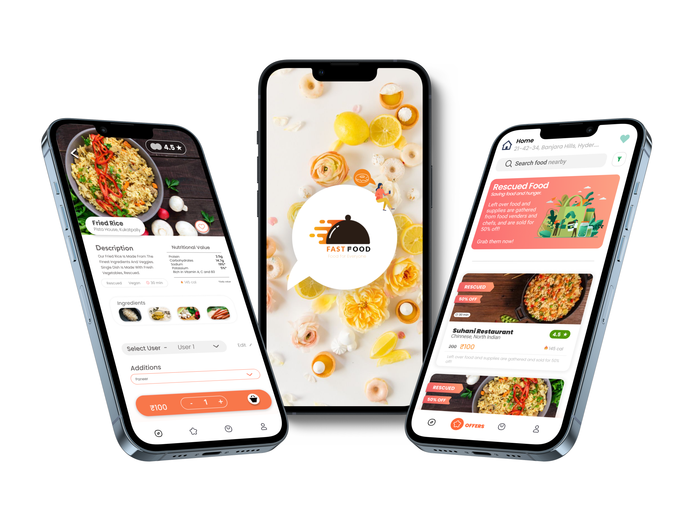

Projects
-
Read the full Project Gutenberg case study
Project Gutenberg
UI Redesign
Project Gutenberg is an online library of free, public domain eBooks. It's an important resource for literature lovers around the world (and a website I use frequently!) but there are some areas where the user experience could be improved. My hope is that redesigning the interface could make it easier for users to understand what Project Gutenberg is about and find the books they want to read.
-
Read the full Fast Food case study
Fast Food
Usability TestingFast Food is a hypothetical food delivery app that a team of student researchers and I evaluated as part of a class project. The two key differentiating features of Fast Food are its focus on "rescued food" (surplus food from restaurants) and its ability to save preferences for multiple users.